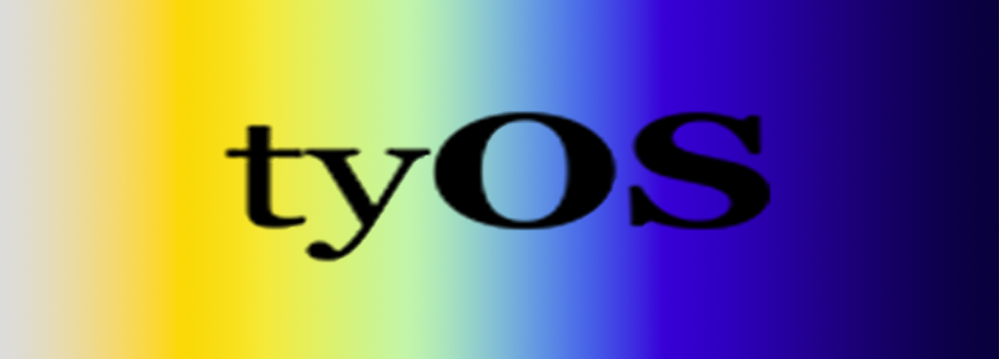

Mission
цель
Technology
технология
Mission
цель
Technology
технология
 Story
рассказ
Jobs
занятие
Story
рассказ
Jobs
занятие

tyOS was founded by two childhood friends.
We've spent our lives writing code together—from simple websites and automation workflows at age ten to the ground up game engine, UI library, and ECS framework we're now developing today nearly two decades later. Depending on the year, our efforts have been collaborative, competitive, or even completely distinct, but we've kept in constant contact. We find time each week to call—putting our heads together to create small businesses, hold one—off two man hackathons, or simply share the latest research and debate development paradigms. Despite taking very different professional paths, we find ourselves converging on our passion for the same work—from-scratch, highly performant, minimalist software that bridges the gap between the highly technical and vibrantly creative.
Though our work on many different codebases at several different companies, we developed a shared theory of how the state of software development has largely deteriorated to where it sits now and how some software still manages to stand out and maintain a higher standard of quality. We began to articulate our vision for a new generation of software. We draw inspiration from the clockwork precision required to build international banking systems, complex video games, and launch rockets with a tiny fraction of the computing power we now carry around in our pockets.
Although there are still industry niches that require this precision, much of it has been abandoned in favor of practices that leverage staggering advances in modern computer hardware to optimize for development scale, not innovation. The constantly shifting myriad of features required by much of today's enterprise software and speed to market pressure felt by startups create a different set of constraints—dominated by feature throughput and genericized broad-based support. But throughput is not latency and genericism is not coherency.
tyOS, however, is uniquely unconstrained. It is not a company that aims to be instantly profitable or to beat other products to market. The goal of this organization is to create software that empowers developers who exist in more tightly constrained environments to benefit from our freedom. We use our own libraries to create our own projects as well, of course, so the project is not solely altruistic.
On this website you will find a mixture of one-off hobby projects we built for pleasure, showcases of our larger libraries and frameworks, and the libraries and frameworks we release for public use. We hope they make your lives a little easier, a little more interesting, and a little more fun.
- James & Henry
All em-dashes were crafted by hand :). No AI was used to write this heartfelt story.